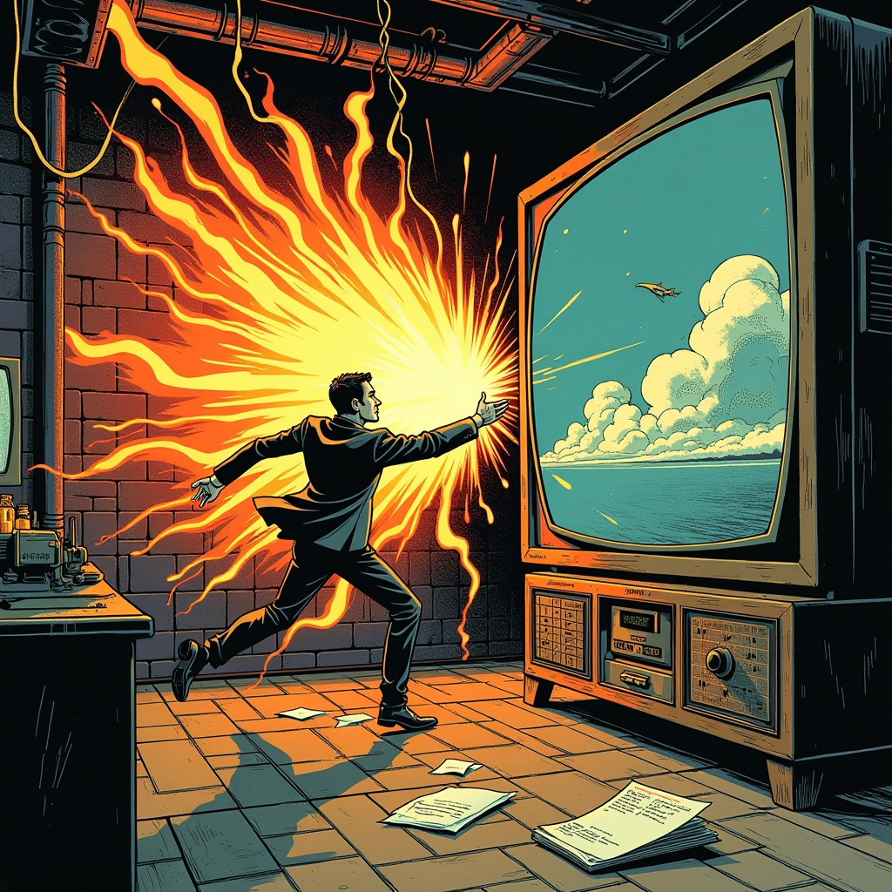
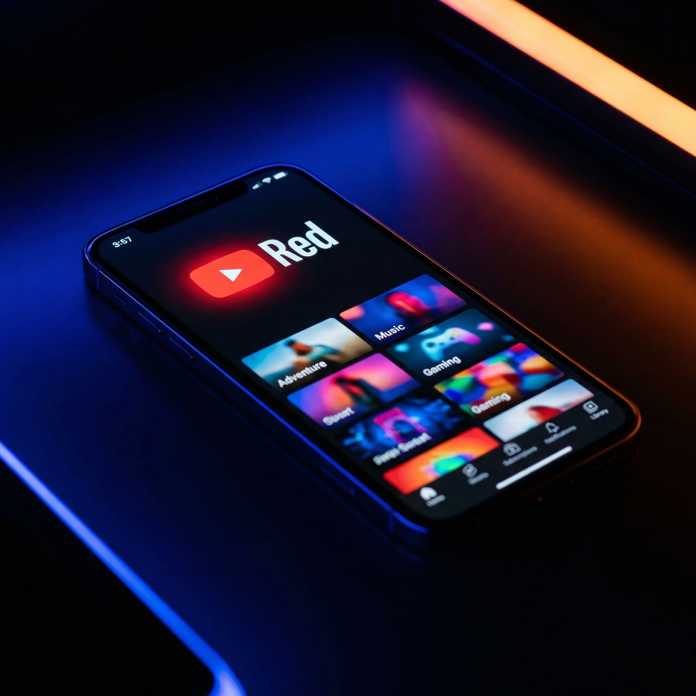
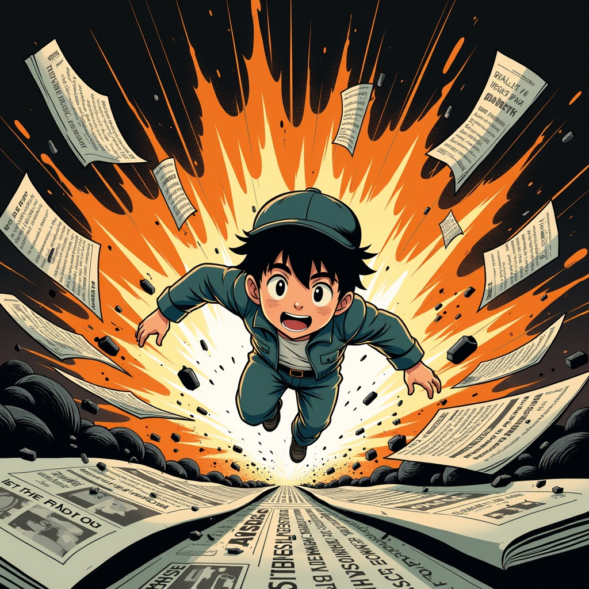
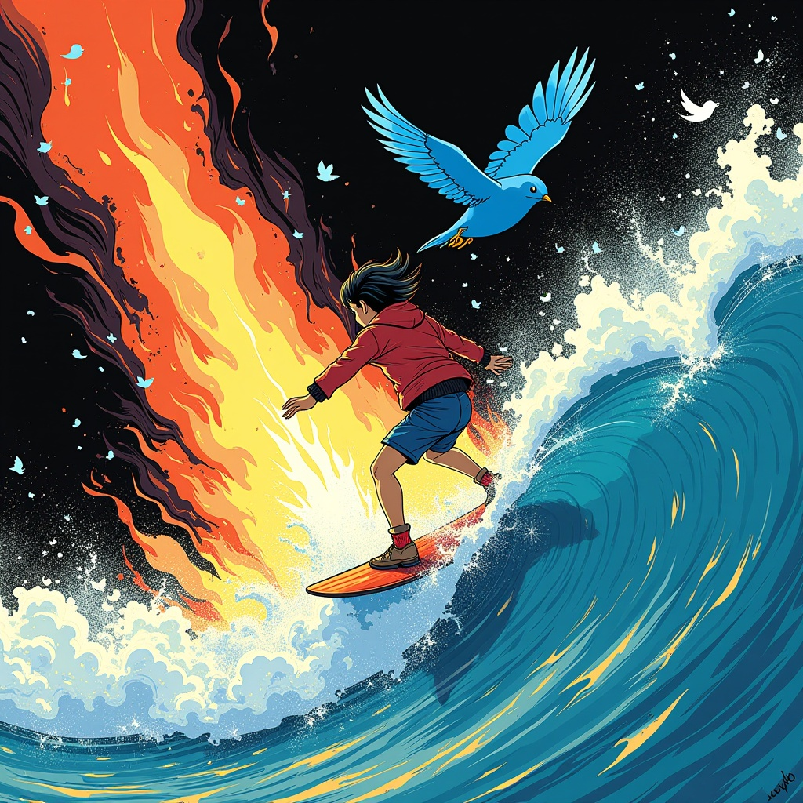
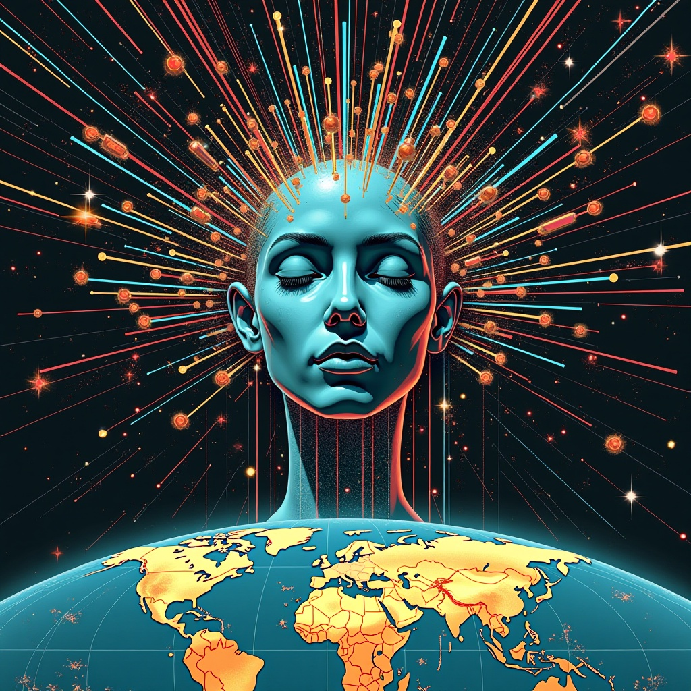
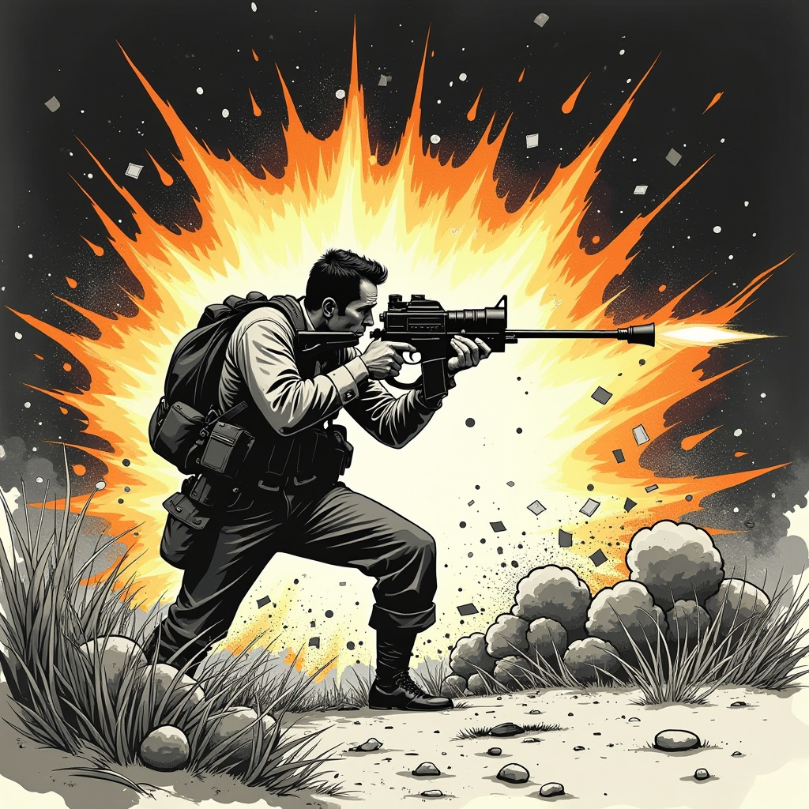
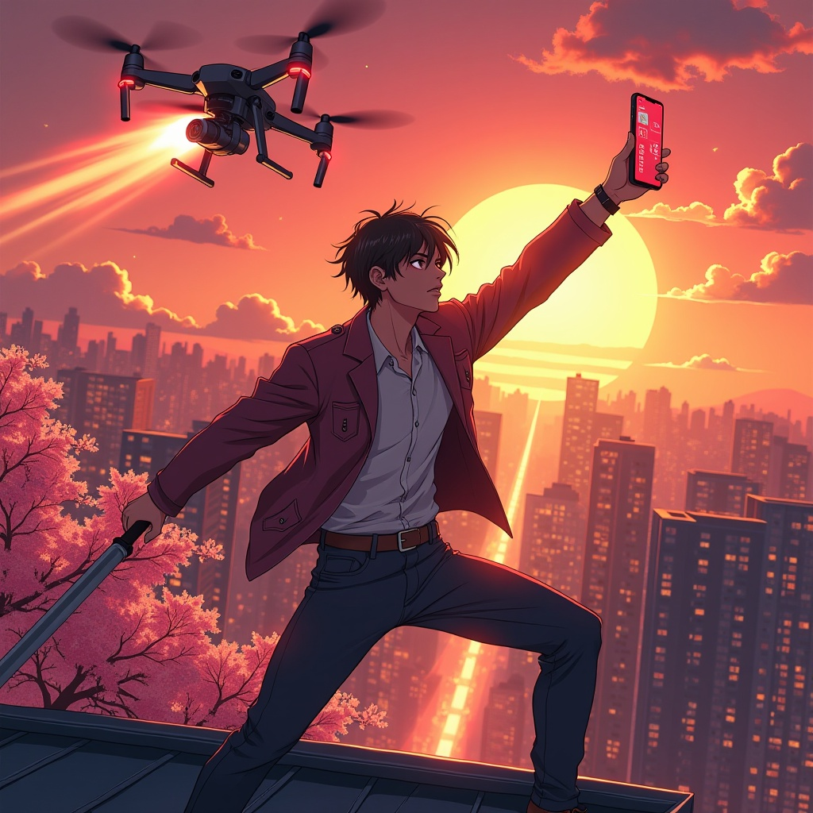
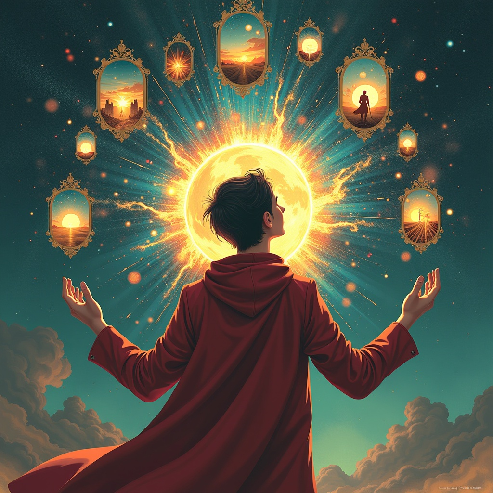

KATECHON
TECHNOLOGY
REAL-TIME CONTENT GENERATION
Traditional Media
TrustHigh
ContentLow
ChannelsFew
Social Media
TrustLow
ContentHigh
ChannelsSingle
How do we build trustworthy and infinitely scalable information channels?
THE ANSWER
Generative Media
Variable Trust
High Content
Multi Channel
THE STACK
API
Avatar / Narration
Market / Predictions
→
→
→
Synthesis
→
Autonomous War Correspondent
Synthetic Intelligence Debate
Zero-Knowledge Proof Visualizer
Neural Swarm Strategy
Adversarial Sandbox
Real-time Geopolitical Sim
AI vs AI Factorio
Multi-Agent Supply Chain
Recursive World Builder
Emergent Civilization
Consensus Oracle Feed
Generative Film Studio
Infinite Documentary
Autonomous News Network
Perpetual Wargame
DEMO
We are building a platform for infinite, customizable, and trusted content generation
Then
Everything was built around the HTML page and text
Now
Everything was built around the video and photo file
Next
Everything will be built around the browser itself — streamed as an overlay
MONETIZATION
Betting Fees
Revenue from prediction markets on model performance
API Access
AI labs pay for benchmarking infrastructure and data
Content Licensing
Livestream content and training data monetization
Seed
Round
Round
The next era of media starts here. Get in.
Prototype Live
Platform Building
London · NYC · SF
FOUNDER · KATECHON
SIMON
JUDD
JUDD
Military
Infantry Officer · USMC
Business
Raised $10M · NYU Stern MBA
Technology
ZK cryptography · Ingonyama · EPFL
"The Moment demands
previous suffering."
previous suffering."
KATECHON
TECHNOLOGY
Let's talk.

WHATSAPP

TELEGRAM
THE EVOLUTION OF MEDIA
BROADCAST
→
DIGITAL
→
GENERATIVE
VIDEO

Television

YouTube
AI Video
NEWS

Newspapers

Twitter / X

AI News
PHOTO

Magazines

Instagram

AI Photos